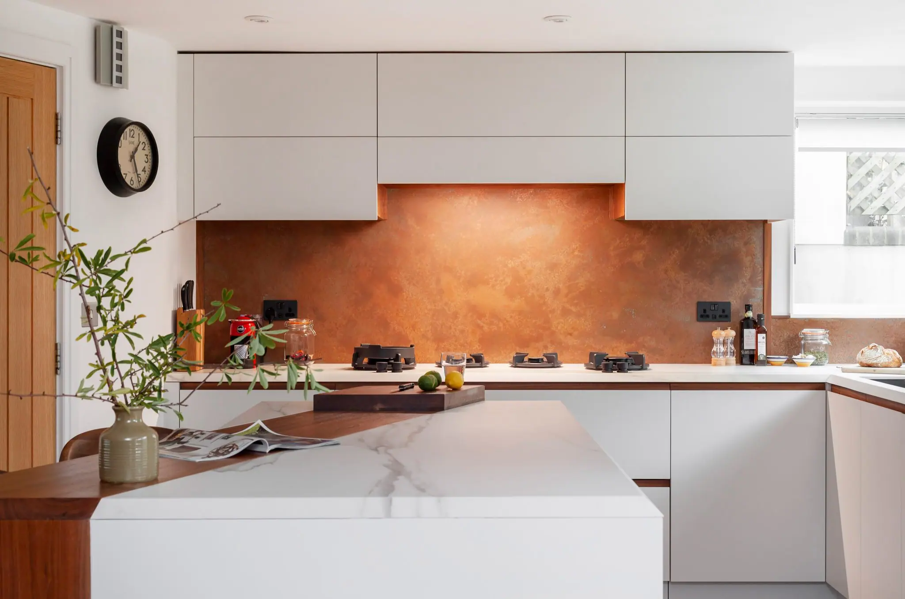
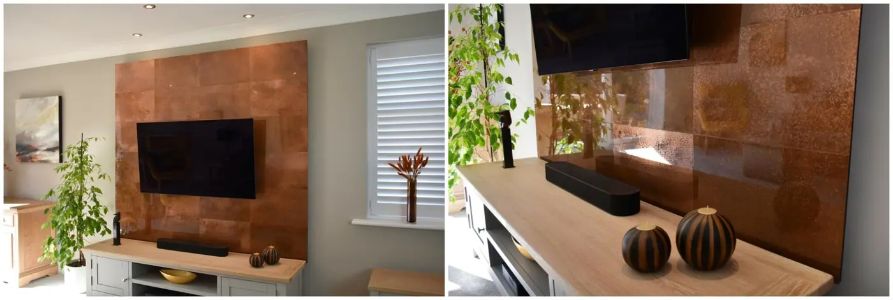
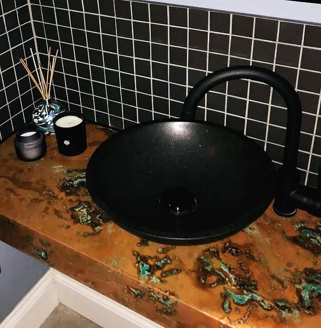
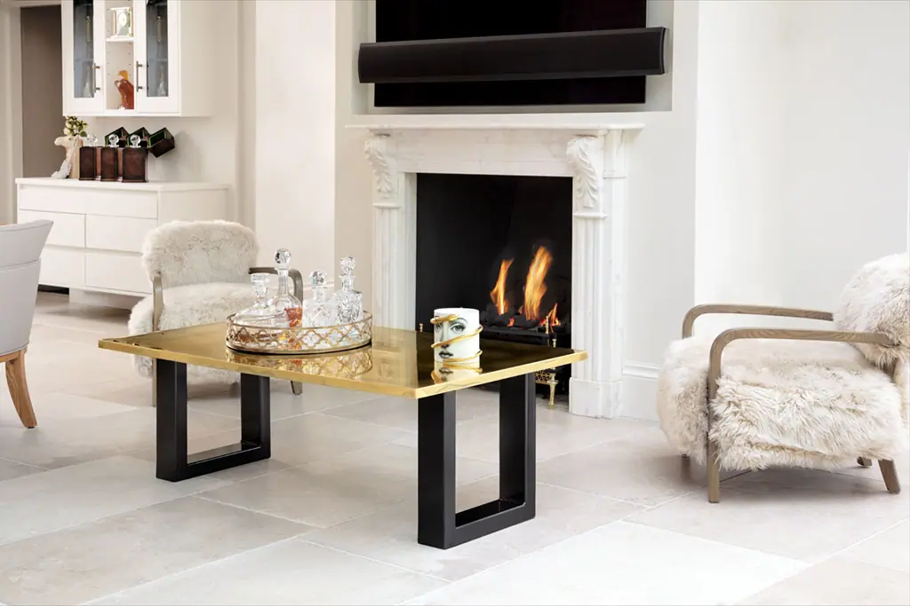

It’s easy to fall in love with the mellow tones of copper , but how best to incorporate them into your living space? We’ve crammed this blog with clever ways to feature this statement-making metal into your design, whatever the room or mood.
1. Contemporary Kitchen
We’ll begin with one of our favourite recent projects: a collaboration with Steven Andrews Bespoke . This fresh, inviting kitchen features one of our aged copper splashbacks . Simple, white cabinetry is the perfect accompaniment for the fiery metal and rich, wood accents. Image by Malonda Photos .
2. Idyllic Wildlife Hide
Tucked away in the grounds of a cottage in a tiny hamlet near bath is this idyllic garden studio. Designed for relaxing and playing guitar, it’s also a perfect hide for viewing the abundant local wildlife. It features natural materials like oak and local stone, but we’re impressed by this beautiful (and functional) wet room, crafted in concrete and aged copper .
3. San Fran Scandi
This large residence in San Francisco was completely handcrafted from the ground up. Designed to echo the Scandinavian modernist style, materials were kept to a rustic pallet. Local redwood, elm, walnut, plaster, blackened bronze, terracotta and, of course, copper, all combine to make this modern mid-century masterpiece.
4. Focal Media Wall

Here’s another of our own recent projects: a gloss-finished, aged copper media wall. It transforms an everyday electrical appliance into a bold conversation point, drawing together the decor in the room. Copper wall panels like these are the perfect way to pep up your living space.
5. Ornate Ceiling
When we’re planning rooms, much thought goes into wall decor and flooring materials, but the ceiling often gets forgotten. This exquisite, embossed copper ceiling is a perfect example of the clout a statement ceiling can have. It shows how copper can uplift a deep, bottle green. We love the way the metal picks out the orange tones in the room’s soft furnishings.
6. Contemporary Cabinetry
The kitchen we featured earlier in this post mixed copper with white for a bright effect; here’s proof that copper looks just as good with dark colours. Matte black and dramatic wood make the perfect accompaniment to these understated, aged metal cabinets.
7. Patinated Bathrooms

Another example of copper and black working in harmony in this, our client’s bathroom. This stunning vanity unit is crafted in our hand- patinated copper , which has swirls of turquoise verdigris running through its surface. A piece like this is easy to install, yet has the potential to completely change the look of a room.
8. An Impressive Headboard
Don’t limit yourself to the headboards on offer when you buy a bed. Instead, consider selecting a simple platform bed and creating a statement headboard on the wall behind. This piece was made using paint, but an even more striking look could be created with aged copper panels .
9. A Bright Bathtub
A traditional bathtub in polished, natural copper instantly adds warmth and wonder to a bathroom design. Or, for that matter a bedroom design. Installed at the foot of a bed or in a bay window, a shimmering copper bathtub can become a true focal point.
10. Mixed Finishes
Can’t decide between the autumnal colours of aged copper and the aquamarine tones of verdigris? You don’t have to make up your mind when you opt for both. This magnificent bathroom takes two very different types of aged copper and places them on opposite walls, with breathtaking effect.



If you can dream it, we’ll make it.
Bars, balustrades, staircases, worktops, cladding and pieces that don’t have a name yet. Our designers and craftspeople work in brass, copper, zinc and steel, and alongside wood.